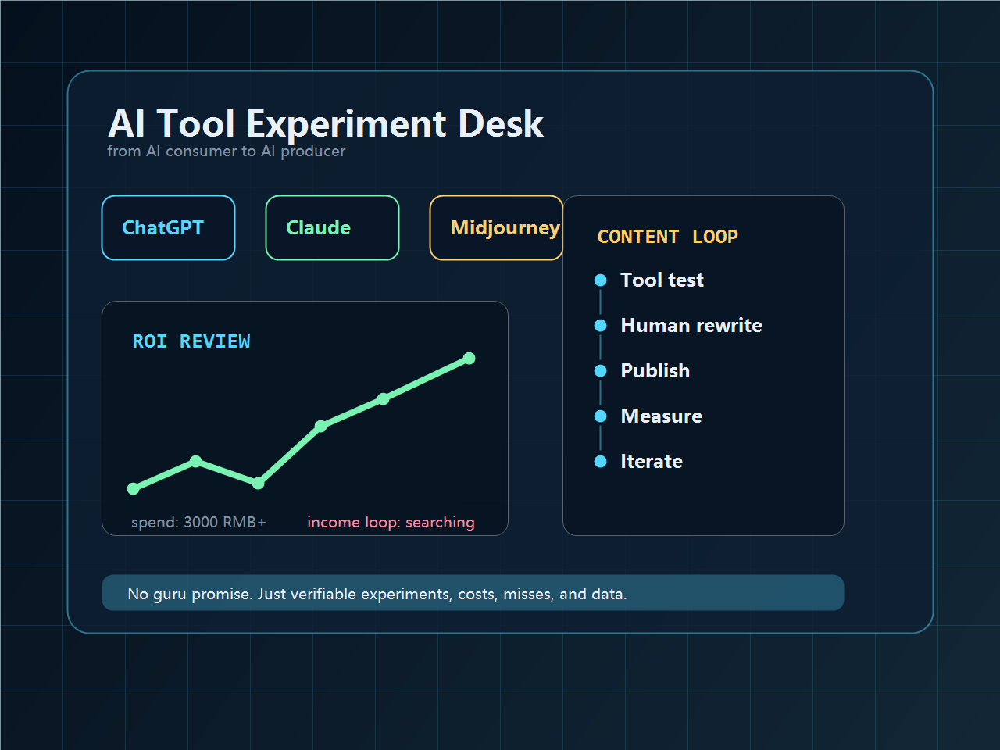

AI side hustle lab
一个普通 AI 爱好者的副业实验记录
我花了约3000元买 AI 工具，还没找到稳定变现闭环。这里记录从 AI消费者 到 AI生产者 的真实过程。

latest review
最新复盘
开篇记录
我花了3000元买AI工具，3个月后的真实ROI复盘
不是讲成功案例，而是把账单、尝试、踩坑和下一步路径摊开。先算清楚钱花到哪里，再判断哪些工具真的值得继续投入。
content map
我会持续记录什么
AI工具实测
真实记录工具费用、使用频率、节省时间和实际产出，避免被AI焦虑绑架。
AI内容创作
用AI做写作、设计、视频和选题，记录人机协作中真正有效的工作流。
AI变现探索
尝试内容、服务、工具包和轻咨询，用数据复盘哪些路径靠谱，哪些浪费时间。
follow the build
关注我的内容记录
第一版先同步内容账号。没有开通或未填写链接的平台，会显示为“即将同步”。